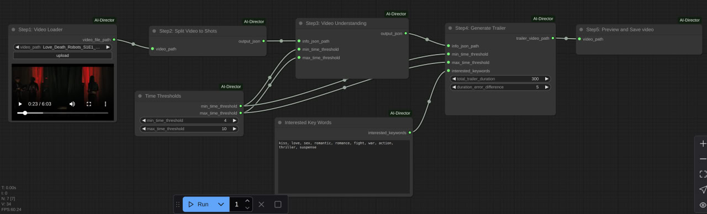

| AI Director -- Trailer auto generation |
| Project Description |
|
This project is to help video editors to cut interesting scenes out and generate trailers. The basic idea is to split the long video into short clips. And then analyze each clip and understand clip content. Based on the input interested key words, the program can filter out the interesting clips and merge them together to generate the trailer automaticly.
|
| Comfyui nodes and workflow |
|  |
| Video demo |